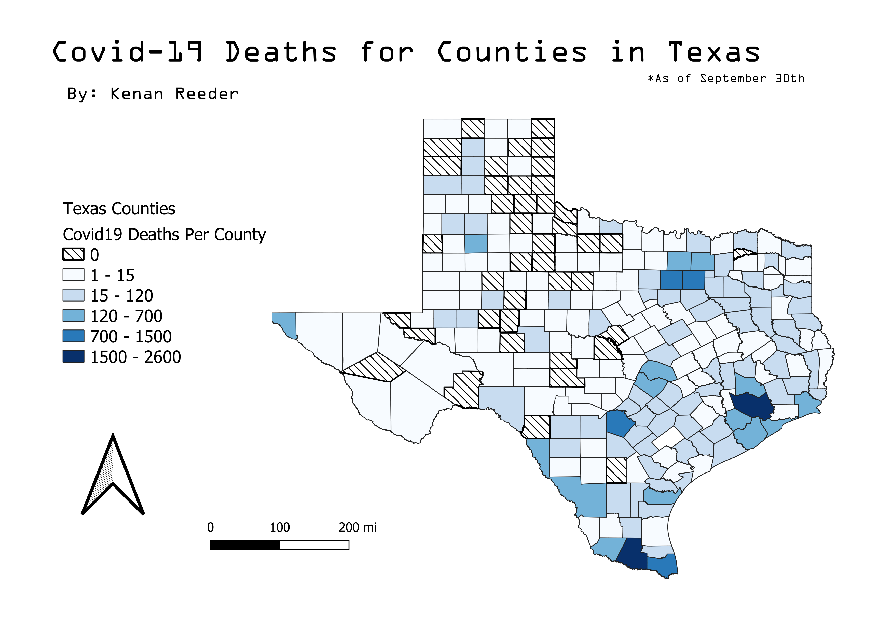
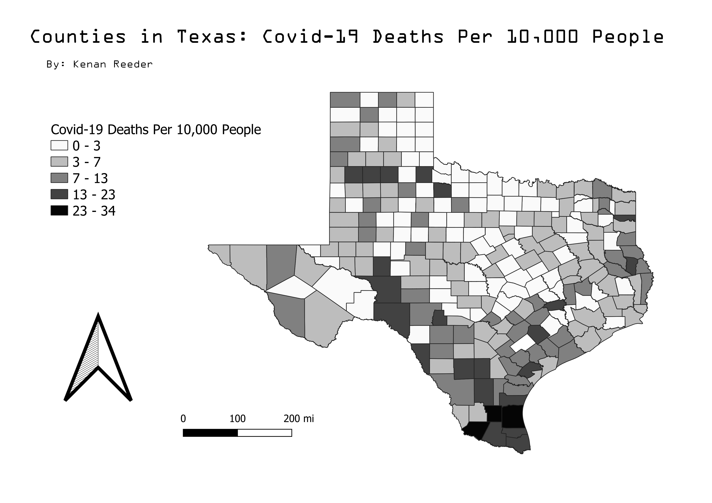

Texas Data Concerning Covid-19 Deaths.
This map shows the distribution of the total Covid-19 deaths for Texas.

This map shows the ratio of Covid-19 Deaths per 10,000 people in each county.

I selected this topic because Covid is a major influence in the world and I was curious on how it has affected a place like Texas. A populous state but with large sections of rural areas.